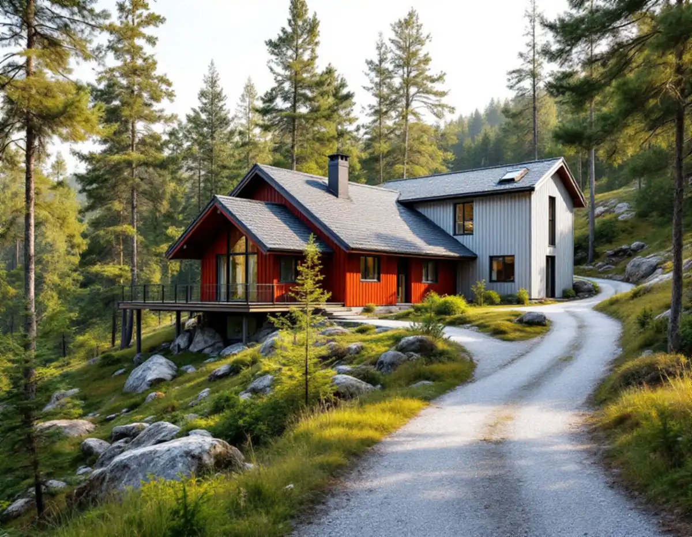
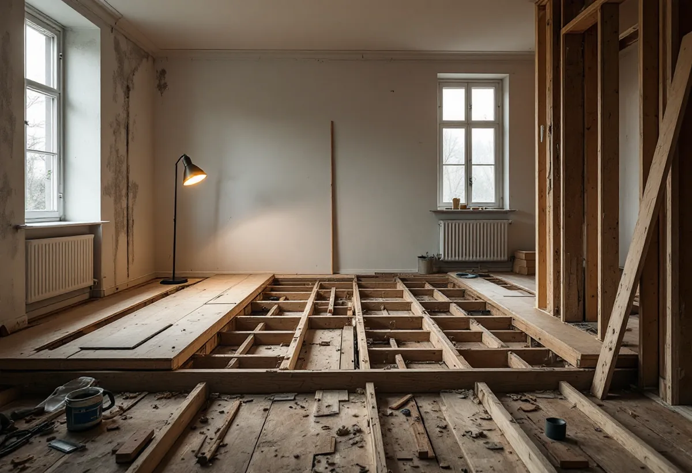
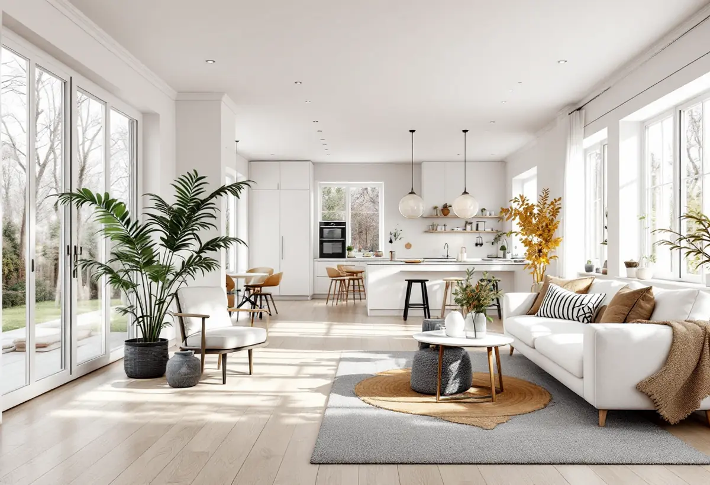

Arkivet
Ritningar från avslutade ärenden hämtas ur bygglovsarkivet.
Många hus i Tullinge och andra delar av Botkyrka har byggts till och om i flera omgångar, från sommarstuga till villa. Geal Entreprenad AB totalrenoverar villor i Botkyrka och börjar med att ta reda på vad huset egentligen består av.

Botkyrkas utvecklingsprogram för Tullinge beskriver en stadsdel som förändrats från ett litet stationssamhälle med inslag av fritidshus till en del av storstaden Stockholm. Under de trettio åren före programmet mer än fördubblades befolkningen.
Programmet beskriver också vad Tullingeborna värdesätter: en omväxlande miljö med slingrande gator i kuperad terräng och charmiga hus från olika epoker. För den som köper ett äldre hus här betyder det ofta att huset har vuxit i takt med samhället.

Ett hus som började som sommarstuga och sedan byggts till har ofta flera delar med olika grund, stomme och isolering. Övergångarna mellan delarna är ställen där fukt, sättningar och kalla golv kan uppstå.
Därför börjar en totalrenovering med att vi kartlägger huset del för del. Vi lyfter golv och öppnar väggar på några ställen innan kostnadsförslaget skrivs, så att du vet vad det är vi räknar på.
I Botkyrkas bygglovsarkiv kan du se och hämta handlingar som tillhör avslutade bygglovsärenden, till exempel ritningar. Du når arkivet genom kommunens e-tjänst och behöver veta adressen eller fastighetsbeteckningen. Pågående ärenden syns inte i arkivet.
Ritningarna visar vad som söktes, men i ett hus som byggts om flera gånger kan verkligheten skilja sig från dem. Vi jämför arkivets ritningar med det vi ser på plats och tar in en konstruktör där bärande väggar ska ändras.
I ett hus som vuxit i omgångar kan den äldsta delen vara klenare isolerad än tillbyggnaden. När huset totalrenoveras får du en chans att jämna ut skillnaden, men det behöver göras med omsorg om fukten. Vi går igenom golv, väggar och vind i varje del och föreslår åtgärder som passar konstruktionen där.
Det är också nu som el och vatten lämpligast dras om, eftersom väggar och golv ändå är öppna. Ett gemensamt grepp om alla installationer gör att huset fungerar som ett hus i stället för flera.
Botkyrka kommun förklarar att byggherre är den som för egen räkning utför eller låter utföra projekterings-, byggnads-, rivnings- eller markarbeten. Det är alltså du som beställer arbetet som är byggherre, inte entreprenören som gör det.
Byggherren har det fulla ansvaret för att samhällskraven uppfylls och ska bland annat utöva egenkontroll och upprätta kontrollplaner. Vi tar fram kontrollplanen tillsammans med dig och fyller i den under arbetet, så att du har underlaget när kommunen frågar efter det.
Många passar på att byta uppvärmning när huset ändå byggs om. Kommunen skriver att bergvärme inte är en bygglovspliktig åtgärd, men att tillstånd för bergvärme söks hos kommunens miljöenhet.
Ska radiatorer flyttas eller golvvärme läggas behöver det samordnas med borrningen och med el och VVS. Om badrummet och köket kan du läsa under badrumsrenovering i Botkyrka och köksrenovering i Botkyrka.

Ritningar från avslutade ärenden hämtas ur bygglovsarkivet.
Varje husdel undersöks, med öppningar där det behövs.
Varje del och varje moment står för sig.
Bärande ändringar och installationer anmäls i tid.
Arbetet sker i den ordning som huset kräver.
Kontrollplanen fylls i och lämnas till kommunen.
För ett småhus räknar Skatteverket bland annat att riva väggar och bygga om planlösningen, arbeta med tilläggsisolering, sätta kakel och klinker och göra förbättringsarbeten som rotarbete.
Avdraget är högst 30 procent av arbetskostnaden och högst 50 000 kronor per person och år, och äger ni huset två kan båda göra avdrag. Material och resor ger inget avdrag. Geal drar av beloppet direkt på fakturan.
Hur många husdelar som finns, skicket på grund och stomme, el och VVS och vilka ytskikt du väljer. Läs mer under villarenovering. Efter ett gratis platsbesök får du ett skriftligt kostnadsförslag.
Renovera hela huset eller lägenheten.
Villarenovering →Takbyte, takbesiktning och plåtarbeten.
Takläggare i Botkyrka →Tullinge, Uttran och Tumba.
Takrenovering i Botkyrka →Kartlagren, checklistan och vattnet.
Attefallshus i Botkyrka →Flytt av badrum, stammar och frånluft.
Badrumsrenovering i Botkyrka →Nytt hus, utfart och byggarbetsplats.
Byggföretag i Botkyrka →Fönstertyper per epok i Botkyrkas villor.
Fönsterbyte i Botkyrka →Kataloghus, källargolv och trägolv.
Golvläggare i Botkyrka →Kök i villor och radhus, för att bo kvar.
Köksrenovering i Botkyrka →Tidstypiska kulörer från 1960-tal till gamla byar.
Målare i Botkyrka →Rännor, stuprör och plåttak i Botkyrka.
Plåtslagare i Botkyrka →Altan, plank och förråd i villaområdena vid järnvägen.
Snickare i Botkyrka →Material, solpaneler och takkupor.
Takbyte i Botkyrka →Ny tapet på träfiberskivor och gamla lager.
Tapetsering i Botkyrka →Villorna i Tullinge, Uttran och kartan.
Tillbyggnad i Botkyrka →